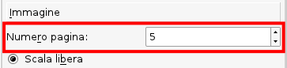

Scribus è in grado di utilizzare un'ampia gamma di formati bitmap, ma la maggior parte di essi dovrebbe essere evitata per lavori seri destinati alla stampa. Questi formati sono (in ordine alfabetico):
|  |
Questo non soltanto è poco professionale, ma può essere un errore costoso. Molti siti utilizzano immagini in formato JPEG, GIF o, sempre più frequentemente, PNG. Ricordate che, qualunque formato usino, la maggior parte delle immagini per il web hanno risoluzioni di 72–96 DPI, che un è valore di gran lunga troppo basso per la stampa. Scribus può generare documenti PDF con risoluzioni di 4000 DPI, ma per la maggior parte degli scopi 300 DPI è una risoluzione ragionevole. Se avete dubbi e volete controllare attentamente un'immagine prima della stampa, create un PDF e osservatelo in un visualizzatore PDF con un alto ingrandimento.
Le immagini JPEG utilizzano la compressione con perdita: è una loro caratteristica intrinseca. Quando un file JPEG viene modificato e/o compresso, una parte dei suoi dati viene eliminata in modo permanente. Inoltre esiste un tipo di JPEG detto “progressivo,” che nella stampa commerciale è puro veleno. Una JPEG progressiva è il tipo che viene parzialmente visualizzato in un browser mentre il suo download è ancora in corso. Scribus non carica né esporta le JPEG progressive.
Un altro problema con i file JPEG è che ogni volta che uno di essi viene aperto, modificato e salvato in un programma di grafica, una parte dei dati dell'immagine va perduta. Quindi, se dovete modificare un file JPEG (ad esempio uno proveniente da una fotocamera digitale), salvatelo in un altro formato (come il TIFF) prima di apportare qualunque cambiamento.
Perché usare il TIFF?
Per la stampa PostScript di alto livello vi sono tre tipi di formato di file che funzionano bene per immagini come le fotografie e qualunque altro elemento grafico formato da pixel, e che hanno retto alla prova del tempo: TIFF, tif e Tiff.
Comunque lo scriviate, il Tagged Image File Format è il formato giusto per le immagini bitmap se state preparando un file per la stampa commerciale.
tifficc che fa parte di LittleCMS, o incorporare un profilo ICC con molti programmi per la grafica bitmap;Esiste un ampio numero di varianti del formato TIFF, e alcune di esse sono molto esoteriche e possono essere aperte solo da un particolare programma. Inoltre, non ogni programma di grafica li salva con la stessa fedeltà agli standard. GIMP utilizza libtiff (come fa anche Scribus), e ha buone capacità di gestire i file TIFF. Un buon modo di lavorare con i file di GIMP consiste nel salvare l'originale nel formato XCF nativo di GIMP, e poi, quando l'immagine è pronta, esportarla come TIFF, oppure come PNG se deve essere utilizzata sul web.
Il formato PNG è un'eccezione alla regola sopra citata, specialmente per gli screenshot. Il PNG ha alcune caratteristiche avanzate, come la capacità di gestire profili ICC e trasparenza alfa. Inoltre il PNG ha ottime capacità di compressione, e può dare risultati molto migliori del JPEG quando vi sono brusche transizioni di colore e contrasto. La sola circostanza in cui il JPEG può essere preferibile al PNG è per fotografie con elevata gamma dinamica, soprattutto per ragioni di dimensioni quando è usato in una pagina web. Per la creazione di PDF contenenti screenshot, il PNG è superbo e dà buoni risultati con la stampa, purché non eseguiate operazioni di scalatura che riducano le dimensioni dell'immagine. Quindi, se avete uno screenshot, che tipicamente ha una risoluzione di 72–96 DPI e avete bisogno di rimpicciolirlo, fatelo scalando l'immagine in un editor di immagini o in Scribus stesso. Quando applicate operazioni di scalatura a screenshot, disabilitate sempre la ricampionatura, qualunque programma usiate. Con gli screenshot non dovreste mai ridurre il numero di pixel, altrimenti l'immagine perderà nitidezza rapidamente.